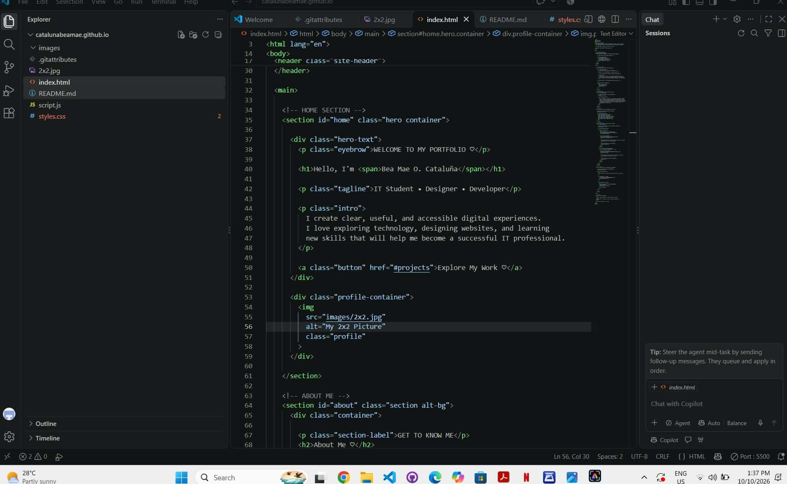

WEB DESIGN
My Portfolio Website
Problem: Creating a simple and clean webpage to practice HTML structure, text formatting, and web design.
Solution: I created a responsive personal portfolio using HTML and CSS to present my student profile, personal information, skills, and projects clearly. I am willing to learn new skills and improve my knowledge of web development.
Tools Used: HTML | CSS | Visual Studio Code (VS Code)
View My Portfolio →